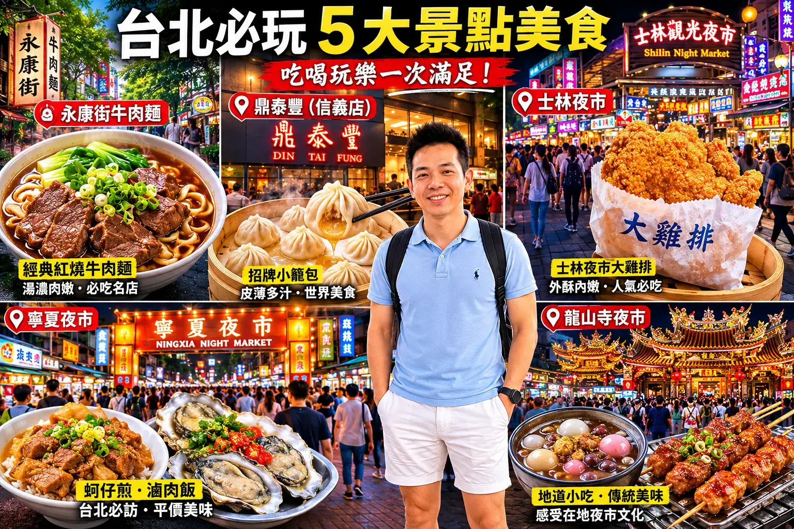

💡 實戰攻略精華
台北是美食密度最高的城市之一，從米其林星級餐廳到巷弄隱藏小吃，從早午餐咖啡廳到深夜居酒屋，這篇幫你用5天時間把台北美食精華全部收集。
大安區｜台北美食的心臟
- 永康街牛肉麵 — NT$180-250，高雄牛肉麵、鼎泰豐、老王記
- 師大夜市 — 燒麻糬、師園鹹酥雞、好好喝奶茶
- 科技大樓站咖啡街 — 溫州街老宅咖啡：Ruins Coffee、March
信義區｜米其林與觀光美食
💬 小編真心話：大安區永康街其實有兩條，觀光客常去的那條人擠人，但往永康公園方向多走幾步，就有很多本地人愛去的小店，像是「段純貞牛肉麵」和「永康15芒果冰」，比排隊名店好吃太多了！建議早上10點前或下午2點後去，避開人潮。
- 鼎泰豐（信義店） — 小籠包NT$268，需排隊30分鐘以上
- 市政府微風廣場 — 各國料理匯集，高樓景觀餐廳
- 象山步道 — 爬完吃吳興街老店筒仔米糕
士林區｜夜市與傳統小吃
士林區除了夜市，還有故宮博物院值得花半天參觀（門票NT$350，開放時間08:30-18:30，周一休館）。故宮附近的至善路一帶也有不少平價美食，吃完逛故宮剛好消化。建議捷運士林站下車，轉乘公車紅30到故宮正館。
- 士林夜市 — 大香腸、士林大牛排、蚵仔煎、泡泡冰
- 士林市場 — 2樓大香腸＋蚵仔煎最經典組合
- 至誠路豆花 — 傳統豆花NT$45，料多實在
大同區｜老台北的味道
迪化街近年老宅改建咖啡廳蓬勃發展，推薦「ASW Tea House」可以品嚐台灣茶，營業時間11:00-19:00。霞海城隍廟是台北最靈驗的月老廟，單身朋友別錯過！開放時間06:00-22:00，免費參觀。迪化街年貨大街在農曆年前最熱鬧，平常則以南北貨和布料批發為主。
- 寧夏夜市 — 在地人摯愛，蚵仔煎、雞肉飯、魯肉飯
- 迪化街老街 — 年貨大街，霞海城隍廟月老，老宅咖啡：ASW
- 大稻埕 — 傳統中藥行改建咖啡廳、布料街上吃米苔目冰
萬華區｜西區美食復興
推薦「兩喜號滷肉飯」，飄香超過80年，一碗NT$45料多實在，營業時間06:00-14:00（售完為止）。龍山寺周邊的「阿兩Ruby」紅茶是老台北人的最愛，一杯NT$25。西門町的阿宗麵線24小時營業，半夜想吃宵夜的首選。
- 龍山寺夜市 — 滷肉飯、碗粿、割包、牛肉湯
- 西門町 — 觀光客美食天堂：阿宗麵線、蜂大咖啡
- 南機場夜市 — 最在地的夜市，土耳其冰淇淋、臭豆腐

💬 小編真心話：萬華區是台北最老的城區之一，但美食一點都不老！龍山寺旁的「兩喜號」飄香超過80年，西門町的蜂大咖啡更是老台北人的早餐記憶。南機場夜市雖然名字叫「夜市」，但下午4點就開始熱鬧，地道程度破表。
中正區｜總統府與重慶南路美食
中正區是台北的政治中心，也是美食聚集地。「金蓬萊遵古台菜」是台北最頂級的台菜餐廳之一，曾被米其林推薦，預算約NT$1,500-2,500/人。如果想吃平價美食，推薦「重慶南路炸雞排」，一份NT$65超大塊，下午3點後開始大排長龍。
- 博愛特區周邊 — 公職人員最愛的午餐聚集地，東門市場美食多
- 二二八和平公園 — 周邊老字號豆漿店，清晨5點就開賣
- 中正紀念堂 — 周邊有許多文青咖啡廳，適合下午茶
💬 小編真心話：中正區的美食雖然不像夜市那麼有名，但有很多公職人員才知道的隱藏版午餐好店！推薦「天津蔥抓餅」，一份NT$35，加蛋加NT$10，酥脆可口，每天早上7-9點在重慶南路一段轉角，去晚了就賣完了！
松山區｜小巨蛋與五分埔美食
松山區有台北小巨蛋，演唱會期間周邊美食一位難求。推薦「阜杭豆漿」，被譽為台北最好吃的豆漿店，但必須早上5點去排隊，或下午3點後去買他們的「厚燒餅」。五分埔則是服飾批發地，周邊有很多平價小吃，一份主餐不到NT$100。
- 小巨蛋周邊 — 南京東路三段美食街，從日式拉麵到泰式料理都有
- 饒河街觀光夜市 — 胡椒餅、藥燉排骨、草莓糖葫蘆
- 五分埔 — 批發服飾街，周邊平價小吃眾多
台北美食預算完整解析
每天餐費預算建議
平價路線（小吃+夜市）：NT$300-500/天｜中等路線（一般餐廳+早午餐）：NT$600-1,200/天｜豪華路線（米其林+五星級Buffet）：NT$2,000-4,000/天
建議把預算分配為：早餐NT$50-100（豆漿店或超商）、午餐NT$100-300（小吃或一般餐廳）、晚餐NT$150-500（夜市或質感餐廳）、點心NT$50-150（手搖飲+甜品）。如果打算挑戰米其林餐廳，建議提前1個月預約，並預留NT$1,500-3,000/人的預算。
常見問題 FAQ
台北米其林餐廳哪幾家值得去？▼
必比登推薦：鼎泰豐（信義店）、宋柏林、雙月食品、小王小黃。林家牛肉麵等。星級餐廳：君品酒店頤宮（唯一三星）。建議提前1個月預約。
台北夜市哪個最好吃？▼
士林夜市（最大型，觀光客多）、寧夏夜市（在地人最愛，蚵仔煎、雞肉飯、魯肉飯）、南機場夜市（最在地，便宜實惠）、饒河街（胡椒餅、藥燉排骨）。
台北美食要花多少預算？▼
小吃：NT$50-150/餐；一般餐廳：NT$300-600/人；米其林：NT$1,000-3,000/人。建議每天餐費預算NT$600-1,200。
台北美食怎麼安排路線最有效率？▼
Day1：大安區（永康街牛肉麵+師大夜市）Day2：士林區（士林夜市+故宮）Day3：大同區（寧夏夜市+迪化街）Day4：信義區（鼎泰豐+象山步道）Day5：萬華區（龍山寺+南機場夜市）。
台北有什麼隱藏版美食？▼
① 永康街「永康15」芒果冰（非鼎泰豐那條巷子）② 大安區「段純貞」牛肉麵 ③ 中山區「喫飯食堂」定食 ④ 松山區「阜杭豆漿」（5點就要排）⑤ 萬華區「合江街」平價便當。這些本地人才知道的店，比觀光客區好吃又便宜。